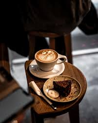

Welcome to Coffee Junk, where every cup tells a story. What started as a simple love for coffee has grown into a place dedicated to bringing people together through exceptional flavors, warm conversations, and unforgettable experiences. At Coffee Junk, we believe that coffee is much more than a daily habit. It is the energy that starts a productive morning, the comfort that brightens a rainy afternoon, and the companion that turns ordinary moments into special memories. Our mission is to create a space where people can slow down, connect, and enjoy the simple pleasure of a perfectly crafted cup of coffee. We carefully source premium coffee beans from some of the finest coffee-growing regions around the world. Each bean is selected for its quality, character, and unique flavor profile. Through careful roasting and expert preparation, we bring out the rich aromas, smooth textures, and distinctive notes that make every cup special. From bold espresso shots to creamy lattes and handcrafted specialty drinks, we strive to deliver excellence in every sip. Our passion extends beyond coffee. We are committed to creating an environment that feels welcoming, comfortable, and inspiring. Whether you’re meeting friends, working on your next big idea, studying for an important exam, or simply taking a moment for yourself, Coffee Junk is designed to be a place where you can feel at home. Quality is at the heart of everything we do. We use fresh ingredients, maintain high standards in every aspect of our service, and continuously seek new ways to improve our customers’ experience. Our team is made up of dedicated coffee enthusiasts who share a genuine passion for their craft and take pride in serving every customer with care and attention. Sustainability and responsibility are also important values for us. We believe that great coffee should be enjoyed with respect for the people and communities involved in its journey from farm to cup. By supporting ethical sourcing practices and making thoughtful choices in our operations, we aim to contribute positively to the future of the coffee industry. As we continue to grow, our goal remains the same: to share our love for coffee and create meaningful experiences for everyone who walks through our doors. Every customer becomes part of the Coffee Junk family, and we are grateful for the opportunity to be a part of your daily routine, celebrations, achievements, and moments of relaxation. Thank you for choosing Coffee Junk. We invite you to discover new flavors, create lasting memories, and enjoy the perfect balance of quality, comfort, and community.